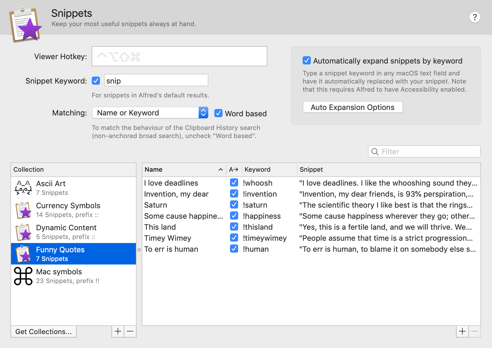
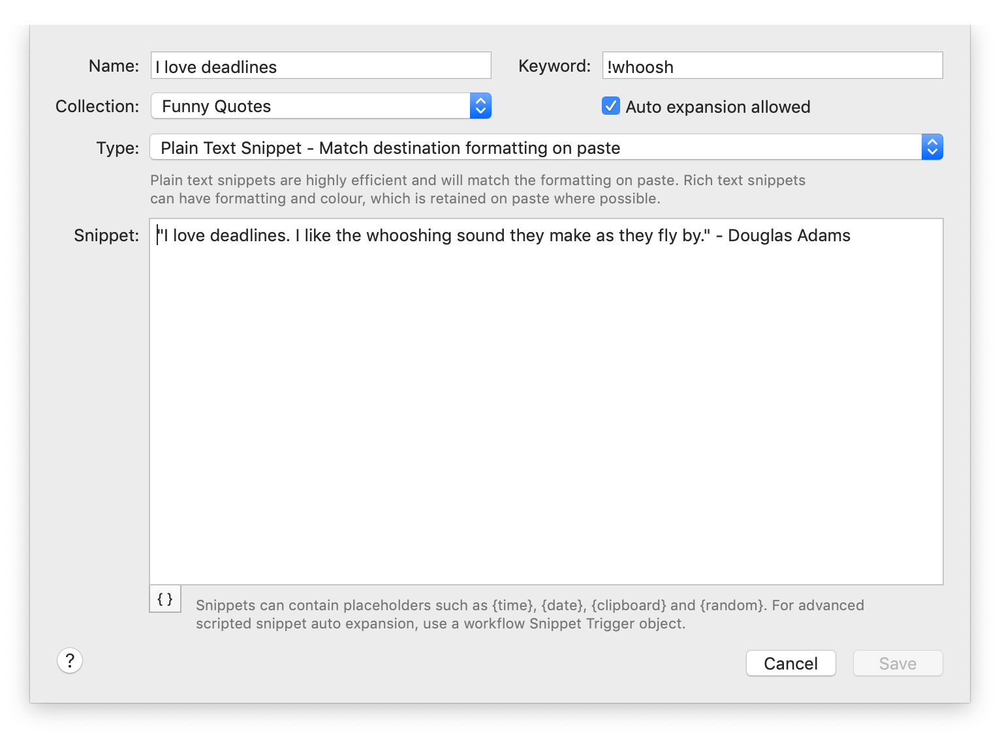
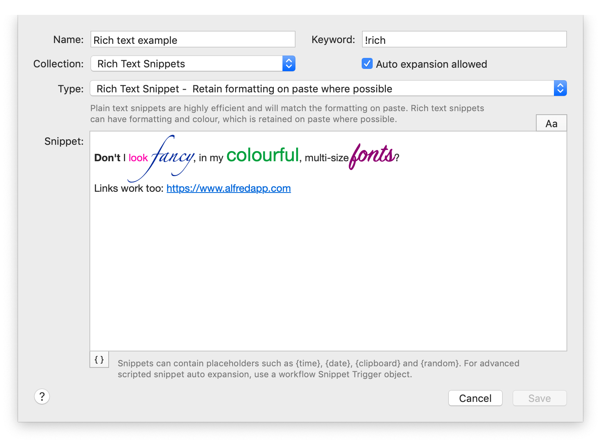
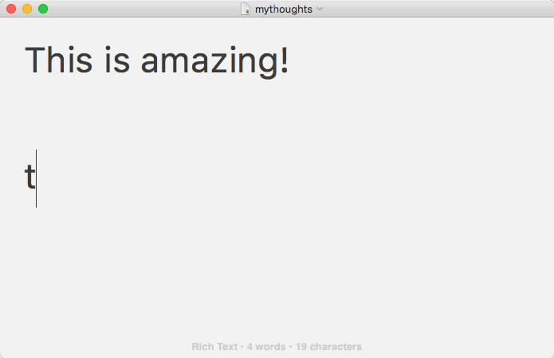
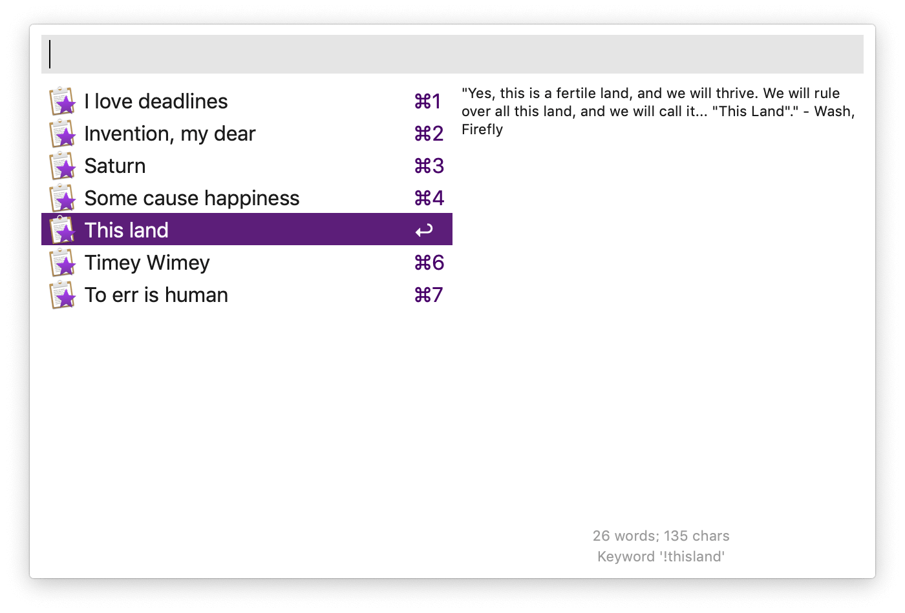
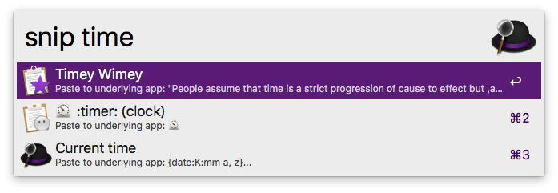

Snippets and Text Expansion
Boost your productivity by using snippets to save your frequently used text clips. Expand them automatically using a keyword or browse for the right clip in the Snippets Viewer.
The snippets and text expansion features are part of Alfred's Powerpack.

Do you frequently have to type your address, a block of text or website address? Typing them manually takes time, requires looking the same information up every time and leaves you with the possibility of making a typo error.
Saving your text clip as an Alfred snippet ensures that the next time you need it, it'll save you time and be as perfect as the first time you typed it.
Learn how to use snippets:
-
Creating your own snippets: Get started by creating a few of your own snippets from Clipboard History or from scratch.
-
Set up snippet auto-expansion: Set up auto-expansion in a few seconds, so that you can expand your snippets just like magic!
-
Using dynamic placeholders in snippets: Add a date, time, clipboard content and more with dynamic content. Use date arithmetic to paste in dates and times in the past or future.
-
Tips for better snippet expansion: A few tricks to help you set the best keywords for your snippets, so that they're easy to use, but aren't accidentally typed!
-
Browsing snippets: Using the snippets viewer is a handy way to view your snippets and collections.
-
Using the "snip" keyword: Type
snipfollowed by your keyword to show your snippet in Alfred. -
Sharing your snippets: Export your snippets for sharing, and save a friend or colleague a lot of time too!
- Using Snippets to Trigger Workflow: Use a snippet in a workflow to trigger an action on your Mac by simply typing your text snippet.
Creating your own Snippets
There are two ways you can create your own snippets; In your Clipboard History Viewer or in Alfred's Snippets preferences.
If you're already using Alfred's Clipboard History and you've just copied something to your clipboard which you'd like to save for use later, pop up your Clipboard History Viewer and use the Cmd + S hotkey to save the selected entry to your snippets.
Alternatively, in Alfred's Features > Snippets preferences, you can create snippets, as well as collections to group your snippets into.

Add new collections by clicking the + at the bottom of the Collection column, or a new snippet with the + at the bottom of the Snippets column.
You can also create rich text snippets. We recommend using plain text snippets in any case where you want the pasted text to match the destination format, and rich text when you want to force the formatting (e.g. setting the colours, fonts and links)

Find out more about creating and editing snippets.
Set a collection-wide affix for a consistent prefix or suffix to your snippets within the collection (e.g. prefix all snippet keywords with \\). Learn more about collection-wide affixes.
Including Dynamic and Cursor Placeholders
You can add your own dynamic placeholders for {date}, {time}, {datetime} and {clipboard} content.
Dynamic Placeholder using built-in formats
- The date in long format:
{date:long}- The time 10 minutes 30 seconds ago:
{time -10m -30s:long}- The second item in your clipboard:
{clipboard:1}(0 represents the latest item, 1 the next item down, and so on)
Take a look at the Dynamic Placeholders page to see the full range of formatting you can use, as there are many new ones in Alfred 4!
To tell Alfred where you'd like the cursor to move to, add {cursor} to your snippet text.
Using Snippet Auto-Expansion
With auto-expansion, you can expand your snippets automatically in any app by typing the snippet's keyword, without popping up Alfred's Snippets window!
Snippet auto-expansion is disabled by default. To activate it, launch Alfred's preferences to Features > Snippets and check the box for "Automatically expand snippets by keyword". Follow the instructions, or take a look at the step-by-step guide to setting up auto-expansion for details.
Once you've activated, make sure you've set a keyword for your snippet, and checked the box to allow auto-expansion. To use the snippet, simply type the keyword you set into the app or text field you want. As if by magic, your keyword will be replaced will the full text snippet!

For your security, Alfred doesn't listen for characters typed when you are in a secure text field, such as a password field, so he won't expand a text snippet in a secure field.
Tips For Better Snippet Expansion
To get the most out of the expansion feature, your keywords need to be memorable but shouldn't be triggered by mistake. Here are some ideas to help you set useful snippet keywords.
- Use non-word keywords to avoid unexpected expansion; Don't use the keyword
dateto paste the date, otherwise every time you try to type it's a date!, you'll find yourself saying it's a 01/06/16! as your snippet auto-expands.- Start all your snippets with the same non-alphanumeric character, such as an exclamation mark, colon or semi-colon. (e.g.
!office). Use collection-wide prefixes and suffixes to do this.- Use unusual capitalisation (Alfred will respect the capitalisation you set, e.g.
officE)- Use double characters (e.g.
ttime)
For more advanced Snippet Text Expansion setup, take a look at the options by clicking the cog in the top right of the Snippets preferences.
These options include:
- Apps in which snippets should not expand, and whether they should expand mid-string
- The ability to change or turn off the sound when expanding snippets
- Tweaking options to slow down key events (for slower Macs, or when using non-standard software) and more.
Browsing Snippets in the Viewer
If you can't remember your keyword, or you prefer to view a list of your keywords, you can do so by popping up Alfred's Snippets Viewer.
To pop up the Snippets Viewer, you can either set a hotkey for it in the Snippets preferences window, or you can pop up your Clipboard History Viewer with its hotkey and choose "All Snippets" at the top. You'll then be shown all your collections and individual snippets, which you can filter by typing part of the title or keyword for the snippet.

Using the "snip" Keyword
If you know the name or keyword for your snippet, you can get to it quickly by typing snip into Alfred followed by either the name or keyword.

Sharing Your Snippets
If you need to share snippets between your own Macs, you can use Alfred's preferences syncing feature.
To share a Snippets collection, right-click the collection name in the left column and choose "Export". You'll then be able to share this file with friends and colleagues who are also using Alfred 3.